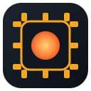

Rust · deterministic RTOS simulator
Emberchip is a deterministic RTOS simulator on a small emulated microcontroller, written in pure Rust std. It models a preemptive fixed-priority scheduler, mutexes with priority inheritance, semaphores, queues, and memory-mapped peripherals, a GPIO LED, a UART, and a timer. Every run is a pure function of a seed, so its correctness gates make hard claims and check them. Pick a scenario and step it tick by tick.
Every control, and what to look for.
Pick a scenario, then step tick by tick or let it run. The Gantt shows which task holds the CPU each tick, who is merely ready, and who is blocked.
Because every run is a pure function of a seed and a task set, the correctness gates can make hard claims and check them. They are committed as tests and run in CI on every push. Every gate asserts the contention it depends on actually happened, so none can pass vacuously.
# the four correctness gates (cargo test) tests/preemption.rs the task that ran had the highest ready priority, every tick tests/priority_inheritance.rs on: high blocked no longer than the critical section off: medium stretches the blocking well past it tests/synchronization.rs mutual exclusion, no lost or duplicated signals, and a byte-identical event timeline across runs tests/schedulability.rs response-time analysis matches the simulated run
The inversion contrast you can trigger above is the same one gate 2 proves: with inheritance the high task is bounded by the low task's short critical section, and with it off the medium task pushes the blocking well beyond. Same seed, same task set, byte-identical timeline, every time.
# the whole thing is pure Rust std, so it builds and runs anywhere cargo run -- demo # blinky, sensor, two workers sharing a mutex cargo run -- run 300 --seed 7 # a random schedulable set, zero misses cargo run -- inversion on # priority inheritance bounds the blocking cargo run -- inversion off # unbounded inversion appears cargo run -- analyze --seed 7 # response-time analysis vs the simulated run # the correctness gates, widen the fuzzed runs with an env knob cargo test EMBERCHIP_FUZZ_OPS=2000 cargo test